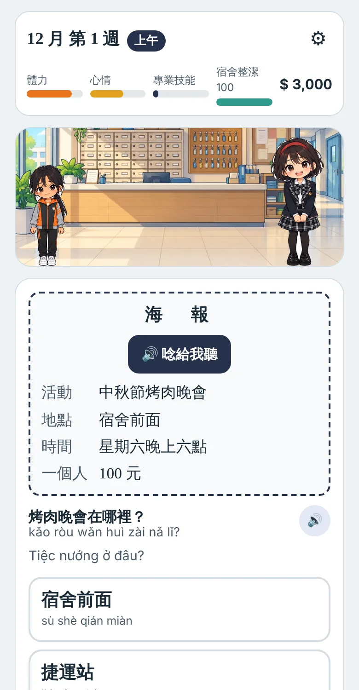
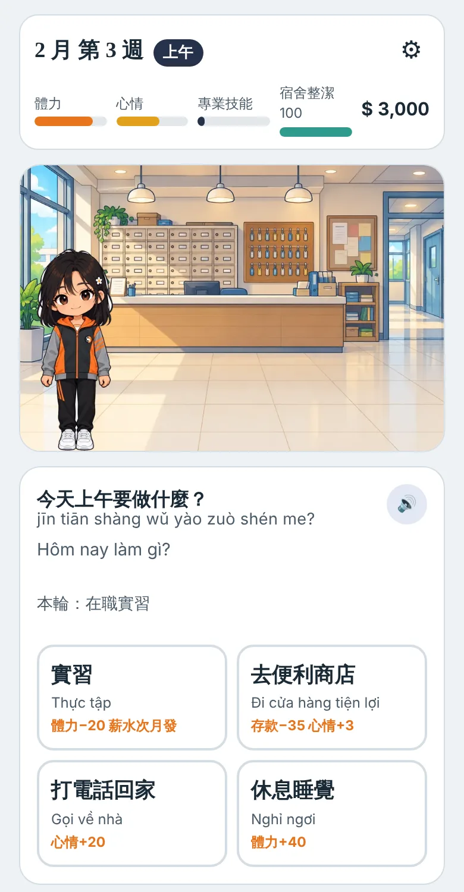
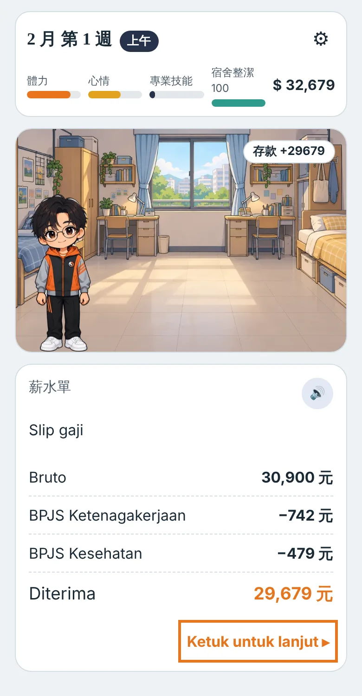
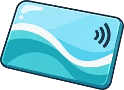
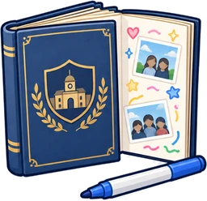

青年高中 僑生建教專班 ・ 華語養成遊戲
台灣生活日記
在台灣的三年，一天一天學中文
從家鄉報名、考華語檢定，到來台灣上課、實習、打工、過節、辦健保卡……生活裡的每一件事，都是一題中文。選對了，日子越過越順；選錯了，陳導師會教你怎麼做。
免下載，手機打開就能玩・進度自動存檔・可換裝置接著玩前傳＋12 章從家鄉報名到三年後畢業，全部開放
A1 → B1詞彙依 TOCFL 詞表逐章加深
6 種母語越南文、印尼文、泰文、緬甸文、高棉文、英文輔助翻譯
15–20 分鐘一章的長度，下課就能玩一段
從家鄉報名到出發
遊戲的前傳「出發前」跟著真實的招生時程走。正式日期請以新生入學資訊網公告為準。
- 前一年 11 月學校開始招生宣導上新生入學資訊網，看招生訊息，選想讀的科
- 12 月向當地保薦單位報名早點報名，就能參加學校的華語學習輔導
- 1 月底以前保薦單位面試或審查每週上華語輔導課
- 2 月底以前通過華語文能力測驗 A1可以報名以後再考
- 5 月底錄取公告收到錄取通知書，6 月辦簽證
- 7 月最後一週抵達台灣學校接機，8 月新生基礎訓練，9 月開學
學中文，就是過生活
不背課本，而是在宿舍、工廠、便利商店、夜市和診所裡，用中文解決真正會遇到的事。
真實的僑生生活
在校和實習輪流。看薪資單、學生證搭公車、宿舍內務檢查、住滿 180 天辦健保卡、到郵局匯款回家，都是真的會遇到的事。
聽、讀、選，一步一步
每句話都能按下去聽。拼音和母語翻譯可以打開或關掉，程度越好，提示就越少。
選錯也能學會
沒駕照騎機車、闖紅燈、把存摺借人……選錯會看到後果，老師教你正確做法，過幾天還會再遇到一次。
收集卡與好幾種結局
過節、比賽、考試都會拿到紀念卡。畢業時依你的選擇出現不同結局，每一種都是好結局。
遊戲畫面



三年旅程
跟著建教專班的行事曆走：一年級下學期通過 A2，畢業前一定要通過 B1，才能直升合作科技大學（3+4 學制，科大是「四天實習、兩天上課」的輪調專班）。
一年級A1 → A2
- 抵達台灣、新生基礎訓練、廠商面試
- 第一次實習、中秋、跨年、春節
- 住滿 180 天，辦健保卡
- 華語文能力測驗 A2
二年級A2 → B1
- 當學長姐，帶學弟妹
- 運動會、技能檢定
- 公司尾牙、元宵猜燈謎
- 華語文能力測驗 B1、協助學校招生
三年級B1・畢業
- 新生說明會換你分享經驗、拍畢業照
- 實習當小組長、寫中文自傳、第一次報稅
- 模擬面試，大學老師到校說明會＋面試
- 畢業典禮；通過 B1 直升科大，看見四年後的自己
收集你的台灣回憶
每張卡都有中文名稱和發音，收進三年旅程地圖裡。

悠遊卡yōu yóu kǎ月餅yuè bǐng
健保卡jiàn bǎo kǎ
獎牌jiǎng pái
小燈籠xiǎo dēng lóng
科大錄取通知書kē dà lù qǔ tōng zhī shū
高中畢業證書gāo zhōng bì yè zhèng shū

畢業紀念冊bì yè jì niàn cè給老師的話
- 事件時間和學校行事曆同步，可以當作活動、實習、檢定前的預習。
- 每章詞彙都對照 TOCFL 詞表，從 A1 逐步加到 B1。
- 存檔代碼可以換手機、換電腦接著玩，不需要帳號。
- 題目答錯的地方會收進複習，晚上「自己複習」時再練一次。